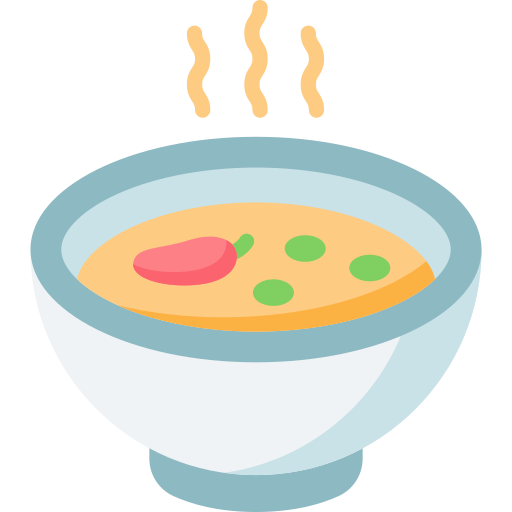

Process 1
Prepare ingredients - for 10 person

Water
- 8L

Pig bones
- 2kg
hen carcass
- for 4 hens

Chicken wings
- 8 wings

Ginger
- 2 pieces
Garlic
- 4 pieces
Onion
- 2 onions

Scallion
(green part)
- 2 scallions

Bonito
- appropriate amount
Process 2
boil bones for remove the smell
If you neglect this process, the soup will be muddy and is still
smelly. Don't slack off!
(Boil until bones surface becomes white.)

Process 3
wash them well
(remove their organs well)
Process 4
boil pig bones
Boil pig bones first, don't boil chickens first! (This time you boil bones to make the soup)
Process 5
boil chickens
please put the chicken in the pot
Process 6
remove scum low frequency
1: Skim the foam from the top of the soup. You can also get rid of extra grease if you want to.
The point is that do not take foam too much
if you skim the foam frequently foam become finer and it will stay in the soup. This will be the reason for the soup's muddy.
2: After while, you can skim the foam second time.
Make sure take all foam on the edge of pot.
Process 7
boil one hour with leeks
1: After skimming the foam a couple of time.
2: Put leeks into the soup and boil the soup for about a hour.
make sure that set heat level to lower
Process 8
put bonito and boil two hours
1: After boiling for a hour, put Bonito flakes in dashi bag.
2: Boil the soup with the dashi bag for two hours.
Done with the soup
Boil it on low heat
Process 9
put noodles and other materials

1: Boil noodle
Drain the noodle

2: Add whatever ingredients you like.